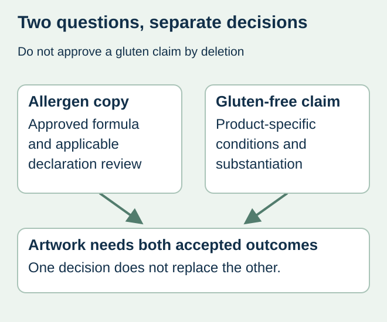
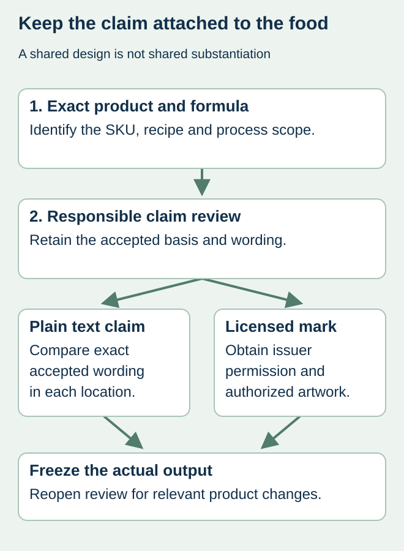

The label team removes a wheat warning and adds “gluten-free” to the front. Those are different decisions. A review of declared major allergens is not a complete assessment of the conditions for a voluntary gluten-free claim, and the printer cannot establish those conditions from the ingredient panel alone.
Obtain a separate product-specific claim decision and keep its approved wording linked to the formula and artwork revision. Treat allergen copy, free-from claims and any licensed certification mark as distinct approval objects. They may share evidence, but their meanings and permissions differ.


Understand the narrow regulatory distinction
FDA’s 21 CFR 101.91 describes conditions for use of the term on foods under its jurisdiction. Its criteria include a gluten limit below 20 ppm and ingredient-related conditions. The limit alone is not a complete approval rule, and this article does not assess a particular food. The responsible reviewer must also address relevant product-specific rules, including where processing changes the evidence needed.
Do not turn a single supplier statement or a result for another product into a range-wide claim. Ask the food-quality and regulatory owners what substantiation applies to the actual recipe, sourcing and process. The printing record should identify their conclusion without publishing confidential technical files.
Use a claim-to-product register
| Approval object | Reference to retain | Question that remains separate |
|---|---|---|
| Food and formula | Exact SKU and current approved version | Does evidence represent this product? |
| Claim decision | Responsible reviewer and substantiation reference | Are all applicable conditions addressed? |
| Accepted text | Exact approved phrase and languages | Did design change the meaning? |
| Optional certification mark | Issuer permission and authorized artwork, if used | Is use of that particular mark authorized? |
| Production output | Identified label file and release owner | Does the actual PDF contain the accepted set? |
A generic “free-from” badge drawn by a designer should not imply independent certification. If a brand uses a licensed mark, preserve that organization’s permission and artwork conditions separately from the regulatory claim. This site does not claim to certify food or verify gluten levels.


Handle recipe and supplier changes deliberately
In a hypothetical snack range, one flavor’s claim approval is copied to another because the package design is shared. The second flavor has a different ingredient supply chain. The correct response is a product-specific review, not a visual argument that the two labels should look consistent.
When the formula, ingredient supplier or relevant process changes, ask the claim owner whether the existing approval remains valid. Record the answer against the affected SKUs and label stock. Do not let a routine repeat order preserve a claim after its evidence scope has become unclear. Keep operational release of food with the responsible food business.
Compare all claim locations before ordering
Check front and back panels, promotional stickers and any related packaging component against the same accepted wording. An approved back panel does not resolve an unreviewed front claim. Use the allergen-copy guide for the separate declaration and formula-change workflow.
The print proof can confirm the presence and layout of the supplied text at its intended size. It cannot substantiate the food claim or establish the safety of an affected batch. Preserve that boundary in the final approval wording so a routine print sign-off is not mistaken for a technical food assessment.
Discuss the unresolved label requirement
Send the intended market, exact product and formula revision, approved claim wording, artwork and responsible claim reviewer. An initial print inquiry does not need confidential formulas or laboratory files. Prepare a label specification inquiry. The contact page opens an email draft and lists email or WhatsApp for attachments. Supply, proof options, testing, pricing and timing require project confirmation.